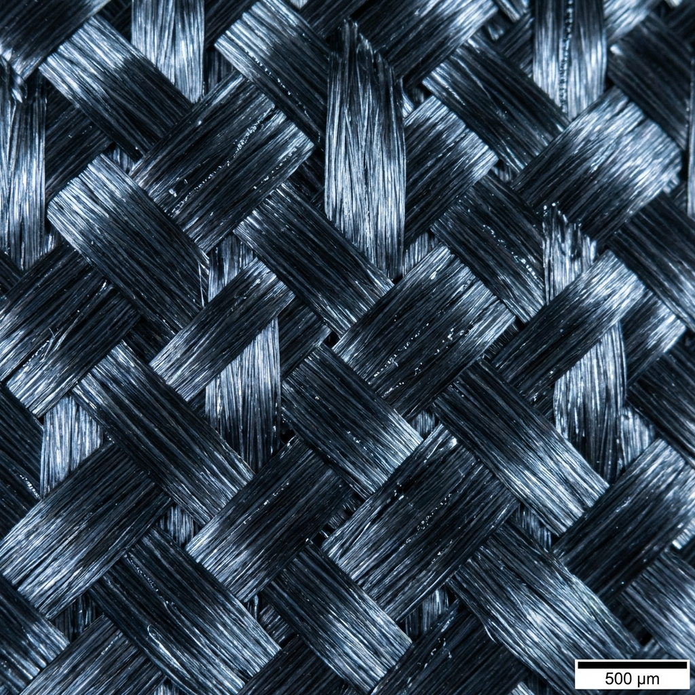

Quality & Operations Management professional with expertise in process optimization, Six Sigma methodologies, and continuous improvement. Passionate about driving measurable efficiency gains through structured problem-solving and cross-functional collaboration.
Get to know more about my background and what drives me
I'm a Quality & Operations Management professional currently pursuing my Master's at Chalmers University of Technology in Gothenburg, Sweden. With a strong foundation in Mechanical Engineering, I bring a unique blend of technical expertise and process optimization skills.
My expertise lies in mechanical and quality operations management, with a focus on process optimization, compliance assurance, and continuous improvement. I have hands-on experience with Six Sigma methodologies and have demonstrated the ability to drive measurable efficiency gains through structured problem-solving.
From reducing validation workloads by 67% at Cepheid AB to designing surveillance drones and evaluating advanced composite materials, I thrive on tackling complex challenges that bridge engineering design and operational excellence.
Technologies and tools I work with
My professional journey and achievements
Streamlined Vision system equipment validation process using Six Sigma DMAIC framework, reducing workload by 67% and cutting timeline from 20.5 to 9 weeks. Conducted root cause analysis and collaborated with cross-functional teams to validate improvements.
Conducted quality inspections to ensure product compliance with industry standards. Assisted in logistics management operations, implementing improvements that enhanced delivery timelines and reduced lead times.
Pursuing advanced studies in quality management systems, process optimization, and operational excellence. Currently working towards Six Sigma Black Belt certification.
Some of my recent work projects
Applied Six Sigma Black Belt methodologies to optimize Cepheid AB's Vision system equipment validation workflow, delivering 67% workload reduction and timeline compression from 20.5 to 9 weeks.
Designed and fabricated a versatile aerial drone system for monitoring and security surveillance applications. Integrated mechanical design with electrical components using CAD and simulation tools.

Evaluated mechanical and tribological properties of Carbon Fiber Reinforced Polymer (CFRP) hybrid composites to assess performance enhancements for diverse engineering applications.
Let's connect and discuss how we can work together